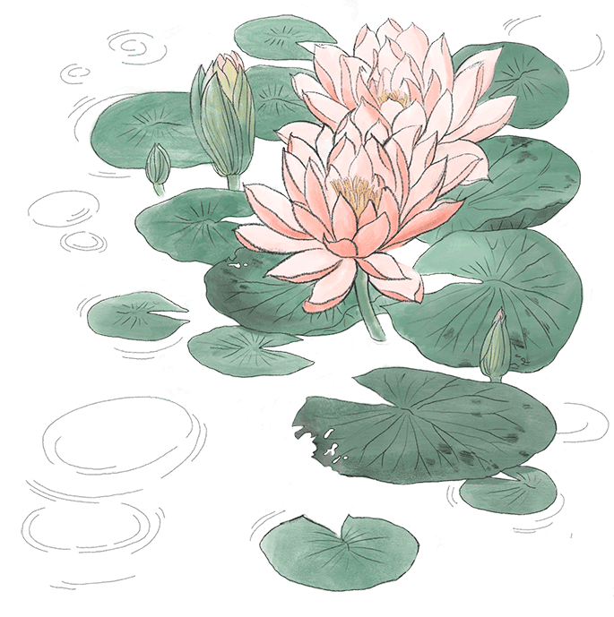
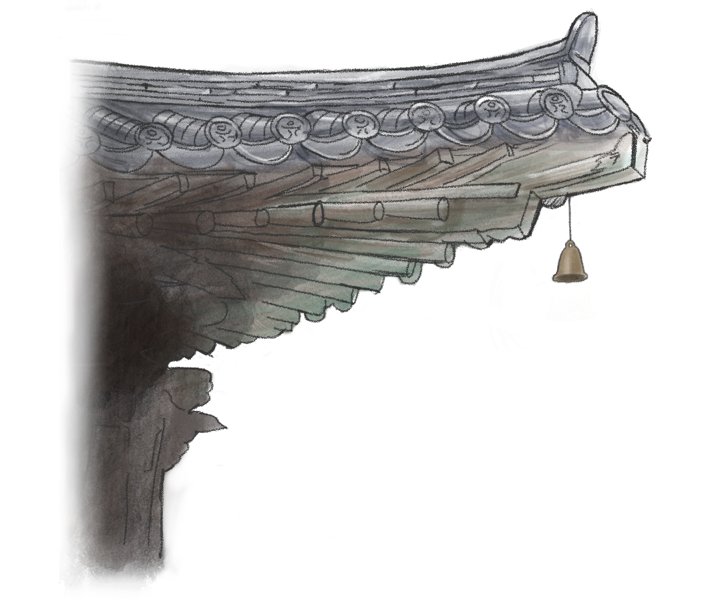
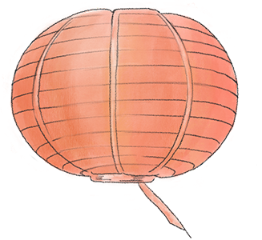
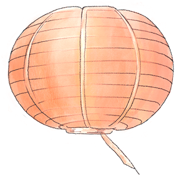
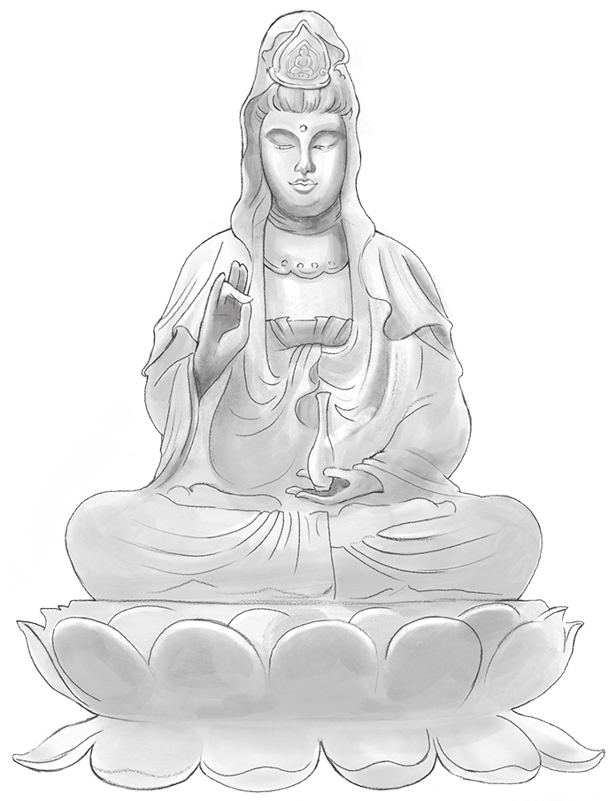

아난다여 어디를 가는가,
모든게 여기 있는데

소리에 놀라지 않는 사자처럼
그물에 걸리지 않는 바람처럼
흙탕물에 더럽혀지지 않는 연꽃처럼
무소의 뿔처럼 혼자서 가라

태어났고 존재했고 형성된 것은
모두 부서지기 마련인 법이거늘
그런 것을 두고 ‘절대로 부서지지 마라’고
한다면 그것은 있을 수 없는 일이다.


그대들은 자신을 섬으로 삼고
자신을 의지하여 머물고
남을 의지하여 머물지 말라

밖에서 그토록 찾던 것이 당신 내면에 있음을 발견하면,
삶이 완전히 달라질 것이다
고요한 마음을 즐기고 생각이 깊고 언제 어디서나 깨어 있는 사람 -인도 고대경전 Sutta Nipāta, 經集, Sn-
copyrightⓒ 2022 All rights reserved by sujung